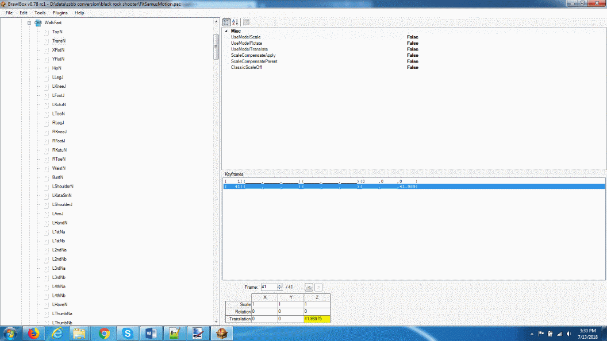

The next steps will require acquiring an MDL0 model and animations files for it. For this tutorial we will use the model and animation set as an example. However, this method works on virtually every model found on Brawl Vault. If your desired model does not come with an animation file, which will contain the word "motion" if its present, you can download all the base game motion files here and use the one that matches the character that the other files are intended for.
Once you've downloaded your desired model, open Brawlbox. Under its file menu, click open.
Nagivate to the files you downloaded and open the file that doesn't contain the word "motion". In this case its "FitPurin00.pac". In the tree of items shown,
right click on “ModelData[0]”, select "export", and save the file. If ModelData[0] is not present, open a different file until you find it. See the graphic below
for a picture of this step.

Finally, right click on “TextureData[0]” in the same tree, click “export all”, and choose a folder to save the textures into. When promted, choose tga as the texture format.
The next step in the process, exporting animations is more variable. This is because depending on what you want to use the resulting M3 model for, you may need to prepare many animations. To export animation data to StarCraft 2, you need to concatenate all the animations you want your model to have into a single animation file.
For users not familiar with Super Smash Bros’s internal animation names, this thread explains what each animation is. Also, you can use Brawlbox to preview what animations look like with your desired model. To preview animations, open up the “ModelData[0]” file from the previous step. Expand the tree and right click on the grey icon that says ”MDL0”. Click preview and on the menu on the left-hand side of the screen click “Load”. Load the file from your extracted files that contains the word “motion” in this case “FitPurinMotionEct.pac”. You can now preview animations using the controls on the left and bottom of the screen. You may need to use the mouse wheel to zoom out in order to see your model.
Once you’ve chosen your animations, open the extracted file containing the word “motion”, in this case “FitPurinMotionEct.pac” with Brawlbox. Expand the tree that in this case says “FitSonicMotion”. Then expand the “AnimationData[0]” tree and finally the “AnmCHR (NW4R)” folder. Note that the names of some of the items in this tree will vary from model to model but the heirarchy won’t.
Right click on each file with the name of an animation you want to use and click “export”. Some animations may require editing to play correctly in StarCraft 2. This is known to include the following animations: "WalkFast", "WalkMiddle", "WalkSlow", and "Run". If you are using any of the aforementioned animations, expand the tree of the desired animation, highlight the "TransN" bone, and enter a value of 0 for the "Translation" field of each keyframe shown. The picture below shows this step. You are free to export the animation after you save the file via braxlbox's file menu.

For this tutorial I will be using the following animations, “Wait1”, “Run”, and “Attack12” in that order. Now that you have your animation files, the next step is to concatenate them. Right click on “AnimationData[0]” and choose new -> new model animation. This will create a blank animation entry in the tree called “NewCHR”. Right click on this entry and click “replace”. From the menu that pops up, choose your first animation file. Next, right click on the animation file you created and choose edit -> append animation. If your first animation file is a looping animation, such as a walking or running animation, append the same file. Otherwise append the next animation file. Repeat the edit-> append animation step for each remaining animation. Looping animations should be appended twice. In this example “Wait1” and “Run” are looping animations and “Attack12” is not. If Brawlbox throws an error when you try to append an animation, see here for a potential way to fix it.
Once you have your model and animation files from the previous two steps, open the BRRES viewer. Right click on the “files” window and open your ModelData[0].brres
file. Expand the tree and double click on the file furthest from the root. Your desired model, in this case Tails, should display in the viewer. Next, right click on the
“files” window again and open the .pac file containing the word “motion” that you edited in the previous step. In this case it's FitPuriMotionEct.pac. Expand the tree and
find “NewCHR”. It’s under the heading “animchr0(nwr4)”. Double click on it and your animation will start playing in the viewer window. Now click on model -> export -> psk.
After saving the resulting file, click on animation -> export -> psa and save the resulting file.
Next: Importing to 3DSmax and preparing the model for Starcraft 2
Return to Index